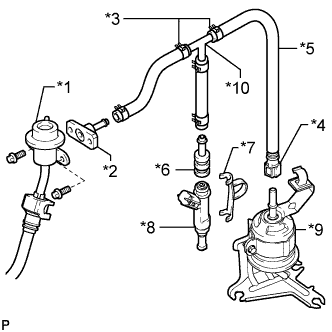
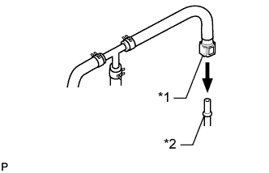
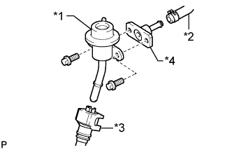
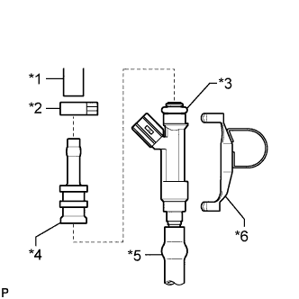
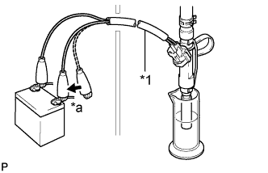

ТОПЛИВНАЯ ФОРСУНКА > ПРОВЕРКА |
| 1. ПРОВЕРЬТЕ ТОПЛИВНУЮ ФОРСУНКУ В СБОРЕ |
Измерьте сопротивление в соответствии со значениями, приведенными в таблице ниже.
| Контакты для подключения диагностического прибора | Условие | Заданные условия |
| 1 - 2 | 20°C (68°F) | 11,6 - 12,4 Ом |
| 2. ПРОВЕРЬТЕ ОБЪЕМ ВПРЫСКА И ГЕРМЕТИЧНОСТЬ |
Проверьте впрыск форсунки.
|  |
Соберите SST, как показано на рисунке.
| *1 | Регулятор давления топлива |
| *2 | SST (штуцер) |
| *3 | SST (фиксатор) |
| *4 | SST (соединитель топливопровода) |
| *5 | SST (шланг) |
| *6 | SST (переходник) |
| *7 | SST (зажим) |
| *8 | Топливная форсунка |
| *9 | Топливный фильтр |
| *10 | SST (тройник) |
Сбросьте давление в топливной системе (Нажмите здесь).
Отсоедините шланг подачи топлива (разъем топливопровода) от топливопровода.
Выверните болт и отсоедините регулятор давления топлива от топливной рампы.
|  |
Подсоедините SST к топливопроводу.
| *1 | SST (соединитель топливопровода) |
| *2 | Топливный фильтр |
|  |
Подсоедините SST (шланг) к впускному патрубку регулятора давления с помощью другого SST (штуцера) и 2 болтов.
| *1 | Регулятор давления топлива |
| *2 | SST (шланг) |
| *3 | Топливопровод № 2 в сборе |
| *4 | SST (штуцер) |
Подсоедините возвратный топливный шланг к выпускному патрубку регулятора давления.
|  |
Установите новое кольцевое уплотнение на форсунку.
Подсоедините SST (переходник и шланг) к форсунке и закрепите форсунку и переходник при помощи SST (зажим).
| *1 | SST (шланг) |
| *2 | SST (фиксатор) |
| *3 | Кольцевое уплотнение |
| *4 | SST (переходник) |
| *5 | Виниловая трубка |
| *6 | SST (зажим) |
Поместите форсунку в мерный цилиндр.
Подсоедините портативный диагностический прибор к DLC3.
Включите зажигание (IG).
Включите портативный диагностический прибор.
Войдите в следующие меню: Powertrain / Engine and ECT / Active Test / Activate the Fuel Pump Speed Control.
|  |
На 15 с подсоедините SST (провод) к форсунке и аккумуляторной батарее и измерьте объём впрыска топлива мерным цилиндром. Проверьте каждую форсунку 2-3 раза.
| *a | Подсоедините |
| *1 | SST (провод) |
Проверьте отсутствие утечек топлива.
Не изменяя условий проверки, отсоедините щупы SST (провода) от аккумуляторной батареи и проверьте, нет ли утечки топлива через форсунку.